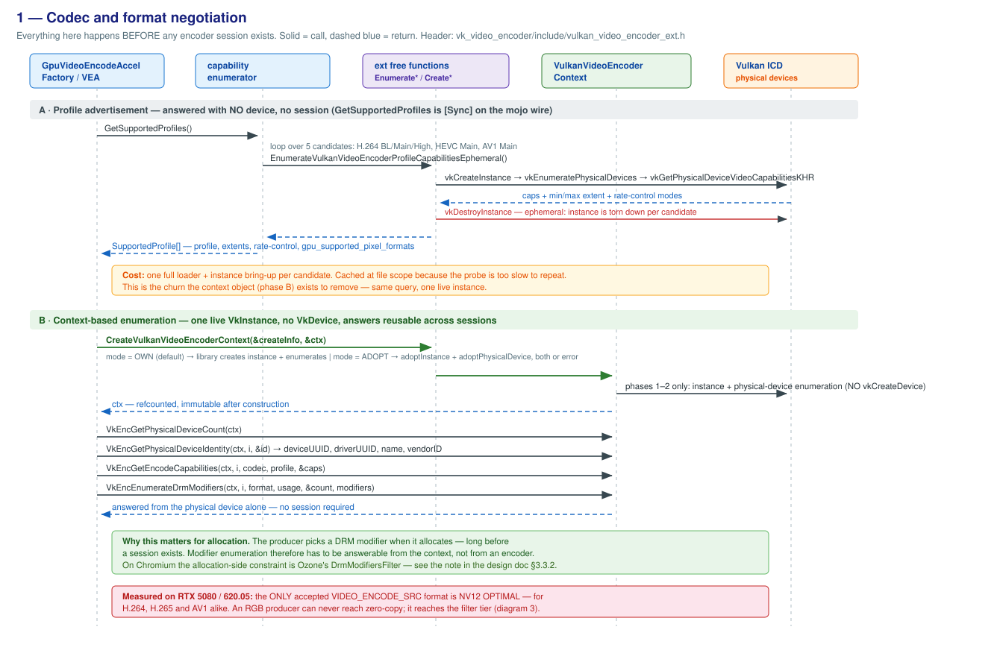
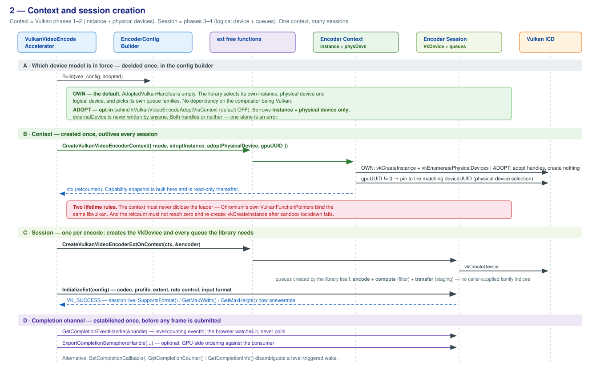
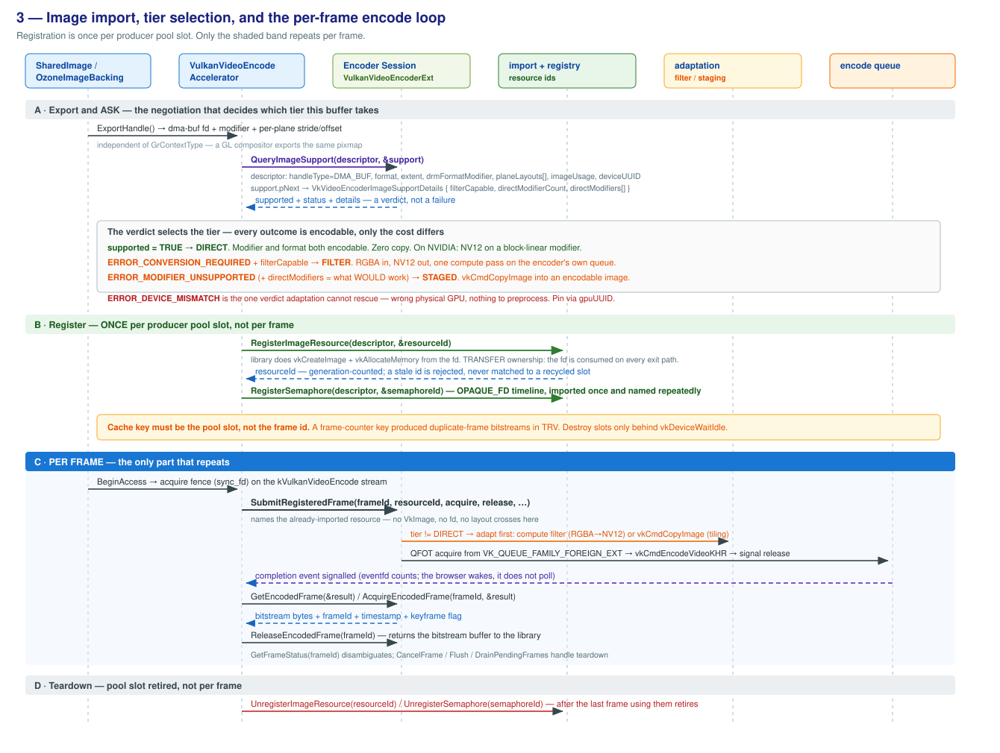

Read against vk_video_encoder/include/vulkan_video_encoder_ext.h. Every call named here is a real entry point in that header, and every status code is one the library can actually return.
The shape, in one paragraph
Three phases, and they run at very different rates. Codec and format capabilities are answered with no device and no session — the browser needs them before it will even offer a profile. Context and session creation happen once per encode: the context owns the instance and the physical-device list, the session owns the VkDevice and every queue. Import and encode is the only part in the frame loop, and even there registration is once per producer pool slot — the per-frame call names an already-imported resource by id.
The interface never hands a VkDevice, VkImage or queue to the embedder. Frames cross as OS handles; answers cross as plain data.
1. Codec and format negotiation

Two ways to ask, and the difference is cost. EnumerateVulkanVideoEncoderProfileCapabilitiesEphemeral() stands an instance up and tears it down per candidate — correct, and too slow to repeat, which is why the browser caches it at file scope. The context form answers the same questions against one live instance: VkEncGetPhysicalDeviceCount(), VkEncGetPhysicalDeviceIdentity(), VkEncGetEncodeCapabilities() and VkEncEnumerateDrmModifiers().
No VkDevice is involved in either. Every vkGetPhysicalDevice* entry point the capability path needs is loaded at instance level, which is what makes a device-free capability query possible at all.
Modifier enumeration has to live here rather than on the session, because the producer chooses a DRM modifier when it allocates — long before an encoder exists.
Measured on an RTX 5080, driver 620.05: the only accepted
VIDEO_ENCODE_SRCformat is NV12OPTIMAL, for H.264, H.265 and AV1 alike. There is no RGB encode-source format, so an RGB producer can never reach the zero-copy tier — it reaches the filter tier in §3.
2. Context and session creation

CreateVulkanVideoEncoderContext() takes a mode. OWN is the default: the library creates its own instance, picks its own physical device, and later its own VkDevice and queues. ADOPT is opt-in and borrows the embedder's instance and physical device only — externalDevice is never written by anyone, so the two sides never share a logical device. Both adopt handles or neither; one alone is an error.
CreateVulkanVideoEncoderExtOnContext() then creates the session, and InitializeExt(config) binds codec, profile, extent, rate control and input format. The session creates encode, compute and transfer queues itself — the compute queue for the preprocess filter, the transfer queue for staging copies. No caller-supplied queue-family indices are involved.
The completion channel is established before any frame is submitted: GetCompletionEventHandle() returns a level/counting eventfd the browser watches rather than polls, with GetCompletionCounter() / GetCompletionInfo() to disambiguate a wake. ExportCompletionSemaphoreHandle() is the GPU-ordering alternative.
Two lifetime rules the context must honour: never dlclose the loader — the embedder's own function pointers bind the same libvulkan — and never let the refcount reach zero and re-create, because vkCreateInstance after sandbox lockdown will not come back.
3. Image import, tier selection, and the encode loop

The producer exports a dma-buf and the browser asks before it registers:
`` QueryImageSupport(descriptor, &support) support.pNext -> VkVideoEncoderImageSupportDetails { filterCapable, directModifierCount, directModifiers[] } ``
The answer is a verdict, not a pass/fail, and every outcome is encodable — only the cost differs:
| Verdict | Tier | Cost |
|---|---|---|
supported = TRUE |
DIRECT | zero copy |
ERROR_CONVERSION_REQUIRED + filterCapable |
FILTER | one compute pass on the encoder's own queue |
ERROR_MODIFIER_UNSUPPORTED (+ directModifiers = what would work) |
STAGED | one vkCmdCopyImage |
ERROR_DEVICE_MISMATCH |
none | wrong physical GPU — nothing to preprocess; pin with gpuUUID |
RegisterImageResource() then imports once per pool slot and returns a generation-counted resourceId; the fd is consumed on every exit path under the default TRANSFER ownership. RegisterSemaphore() imports an OPAQUE_FD timeline the same way.
Per frame, only this repeats: SubmitRegisteredFrame(frameId, resourceId, acquire, release, …) — which names the already-imported resource, so no VkImage, fd or layout crosses the boundary — then the completion event fires, GetEncodedFrame() or AcquireEncodedFrame() collects the bitstream, and ReleaseEncodedFrame() returns the buffer.
Cache the registration by pool slot, never by frame id. A frame-counter key produced duplicate-frame bitstreams in the TRV reference client. Destroy slots only behind
vkDeviceWaitIdle.
Related
VULKAN_VIDEO_ENCODER_CONTEXT_DESIGN.md— why the
context/session split is drawn where it is
— why OWN is the default
VULKAN_VIDEO_ENCODER_RC5_REVIEW.md— conformance of the
implementation against both